Hands-on Exercise 4c - Visualising Uncertainty
4.1 Learning Outcome
Visualising uncertainty is an important part of data analysis because a single value, such as a mean score, rarely tells the full story. A point estimate gives us a clean summary, but uncertainty shows how reliable that estimate is.
In this exercise, we will focus on different ways to show uncertainty in statistical graphics. We will start with standard error bars and confidence intervals, then move towards interactive uncertainty charts and more advanced uncertainty visualisation using ggdist.
By the end of this exercise, we will be able to:
- create standard error bars using
ggplot2, - plot confidence intervals for point estimates,
- build interactive uncertainty charts using
plotly,DT, andcrosstalk, - use
ggdistto visualise distributions and uncertainty, - explain the idea of Hypothetical Outcome Plots,
- understand why uncertainty should be shown together with point estimates.
4.2 Getting Started
4.2.1 Installing and loading the packages
For this exercise, several R packages are used. tidyverse is used for data wrangling and plotting, plotly is used for interactive graphics, DT is used for interactive tables, crosstalk helps connect widgets, and ggdist provides specialised geoms for visualising uncertainty.
NotePackage note
System installation messages are hidden in the final website to keep the page clean. If a package is missing, install it once in the Console before rendering.
pacman::p_load(
tidyverse,
plotly,
crosstalk,
DT,
ggdist,
gganimate,
knitr,
scales
)4.2.2 Data import
For this exercise, we use Exam_data.csv. The dataset contains student examination scores and demographic grouping variables. The main focus will be on Maths scores by race.
Rows: 322
Columns: 7
$ ID <chr> "Student321", "Student305", "Student289", "Student227", "Stude…
$ CLASS <fct> 3I, 3I, 3H, 3F, 3I, 3I, 3I, 3I, 3I, 3H, 3I, 3H, 3I, 3I, 3H, 3I…
$ GENDER <fct> Male, Female, Male, Male, Male, Female, Male, Male, Male, Male…
$ RACE <fct> Malay, Malay, Chinese, Chinese, Malay, Malay, Chinese, Malay, …
$ ENGLISH <dbl> 21, 24, 26, 27, 27, 31, 31, 31, 33, 34, 34, 36, 36, 36, 37, 38…
$ MATHS <dbl> 9, 22, 16, 77, 11, 16, 21, 18, 19, 49, 39, 35, 23, 36, 49, 30,…
$ SCIENCE <dbl> 15, 16, 16, 31, 25, 16, 25, 27, 15, 37, 42, 22, 32, 36, 35, 45…exam <- read_csv("Exam_data.csv", show_col_types = FALSE) %>%
mutate(
RACE = as.factor(RACE),
GENDER = as.factor(GENDER),
CLASS = as.factor(CLASS)
)
glimpse(exam)Rows: 322
Columns: 7
$ ID <chr> "Student321", "Student305", "Student289", "Student227", "Stude…
$ CLASS <fct> 3I, 3I, 3H, 3F, 3I, 3I, 3I, 3I, 3I, 3H, 3I, 3H, 3I, 3I, 3H, 3I…
$ GENDER <fct> Male, Female, Male, Male, Male, Female, Male, Male, Male, Male…
$ RACE <fct> Malay, Malay, Chinese, Chinese, Malay, Malay, Chinese, Malay, …
$ ENGLISH <dbl> 21, 24, 26, 27, 27, 31, 31, 31, 33, 34, 34, 36, 36, 36, 37, 38…
$ MATHS <dbl> 9, 22, 16, 77, 11, 16, 21, 18, 19, 49, 39, 35, 23, 36, 49, 30,…
$ SCIENCE <dbl> 15, 16, 16, 31, 25, 16, 25, 27, 15, 37, 42, 22, 32, 36, 35, 45…The categorical variables are converted into factors because they will be used as grouping variables in the visualisations.
4.3 Visualising the uncertainty of point estimates: ggplot2 methods
A point estimate is a single summary value, such as the mean. However, a point estimate alone can be misleading because it does not show how precise or uncertain the estimate is.
In this section, we visualise the uncertainty of mean Maths scores by race. We will use standard error bars, 95% confidence intervals, and 99% confidence intervals.
ImportantImportant
Do not confuse the uncertainty of a point estimate with the variation in the raw data.
A group may have a wide spread of individual scores, but the group mean can still be estimated more precisely when the sample size is large.
4.3.1 Preparing the summary statistics
Before plotting uncertainty, we first compute the required summary statistics: sample size, mean, standard deviation, standard error, and confidence intervals.
my_sum <- exam %>%
group_by(RACE) %>%
summarise(
n = n(),
mean = mean(MATHS, na.rm = TRUE),
sd = sd(MATHS, na.rm = TRUE),
.groups = "drop"
) %>%
mutate(
se = sd / sqrt(n),
ci95_low = mean - 1.96 * se,
ci95_high = mean + 1.96 * se,
ci99_low = mean - 2.58 * se,
ci99_high = mean + 2.58 * se
)
DT::datatable(
my_sum %>%
mutate(across(where(is.numeric), ~ round(.x, 2))),
rownames = FALSE,
class = "compact stripe hover",
options = list(pageLength = 10, scrollX = TRUE),
width = "100%"
)This table is the foundation for the next few charts. The group_by() function groups the data by race, while summarise() calculates the mean and standard deviation. The mutate() step then derives standard error and confidence interval limits.
TipWhat can we learn?
The standard error becomes smaller when the sample size is larger. This is why groups with more students often have narrower uncertainty intervals.
4.3.2 Plotting standard error bars of point estimates
A standard error bar shows the mean plus or minus one standard error. This gives a compact view of how precise the estimated mean is.
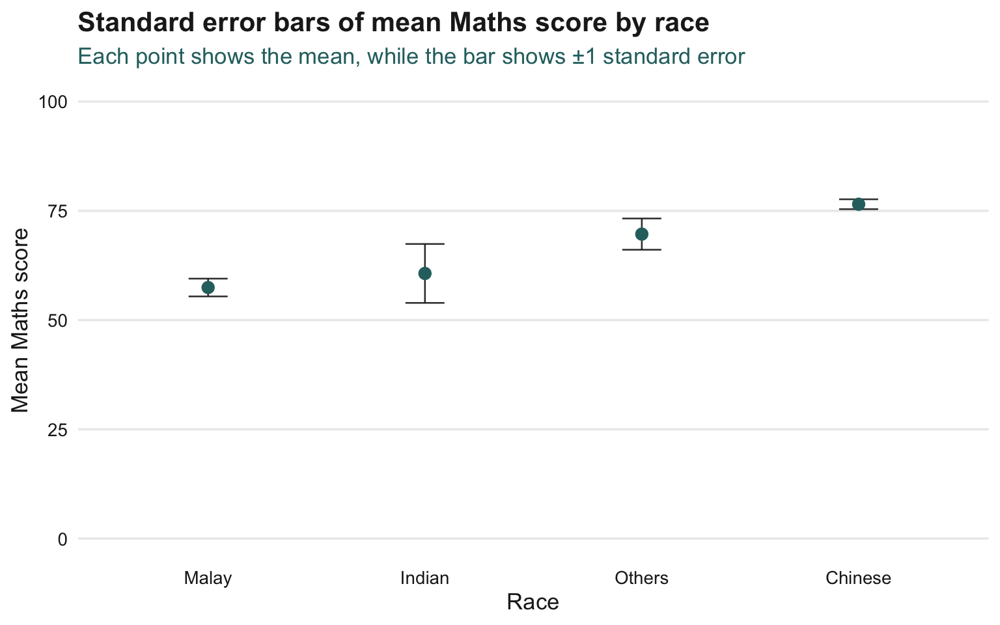
ggplot(my_sum, aes(x = reorder(RACE, mean), y = mean)) +
geom_errorbar(
aes(ymin = mean - se, ymax = mean + se),
width = 0.18,
colour = my_dark,
linewidth = 0.45,
alpha = 0.9
) +
geom_point(
colour = my_teal,
size = 2.8
) +
coord_cartesian(ylim = c(0, 100)) +
labs(
title = "Standard error bars of mean Maths score by race",
subtitle = "Each point shows the mean, while the bar shows ±1 standard error",
x = "Race",
y = "Mean Maths score"
) +
theme_yy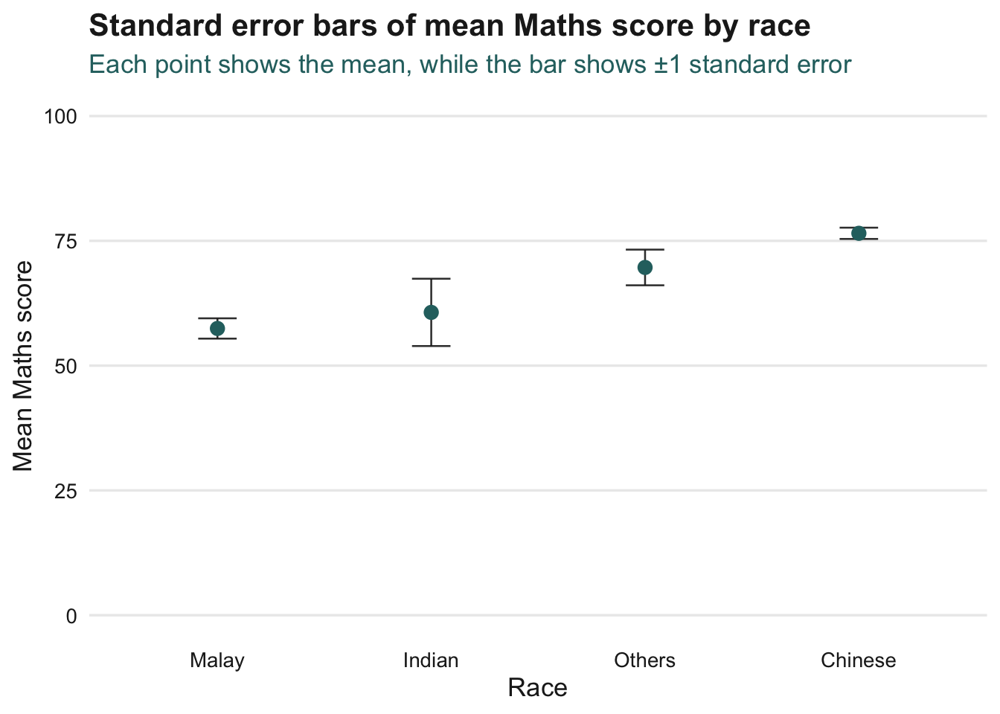
This chart makes the mean comparison easier to read. However, standard error bars should not be overinterpreted as full confidence intervals.
4.3.3 Plotting confidence intervals of point estimates
A confidence interval gives a wider and more interpretable range around the mean. Here, the 95% confidence interval is computed using:
mean ± 1.96 × standard error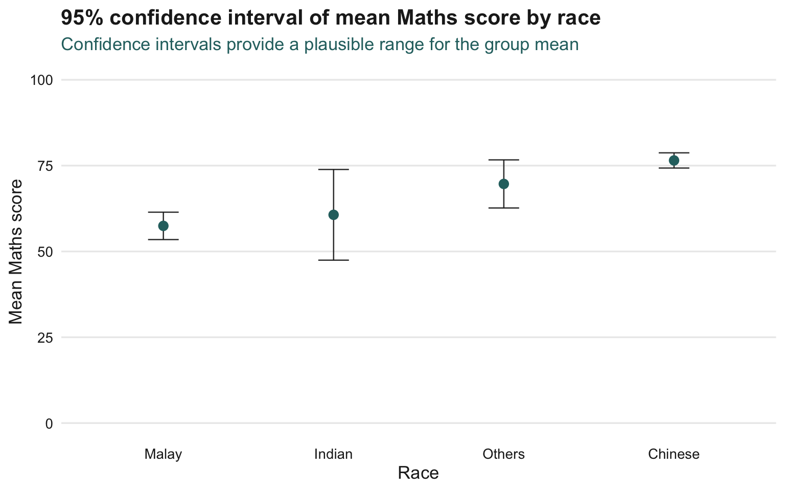
ggplot(my_sum, aes(x = reorder(RACE, mean), y = mean)) +
geom_errorbar(
aes(ymin = ci95_low, ymax = ci95_high),
width = 0.18,
colour = my_dark,
linewidth = 0.45,
alpha = 0.9
) +
geom_point(
colour = my_teal,
size = 2.8
) +
coord_cartesian(ylim = c(0, 100)) +
labs(
title = "95% confidence interval of mean Maths score by race",
subtitle = "Confidence intervals provide a plausible range for the group mean",
x = "Race",
y = "Mean Maths score"
) +
theme_yy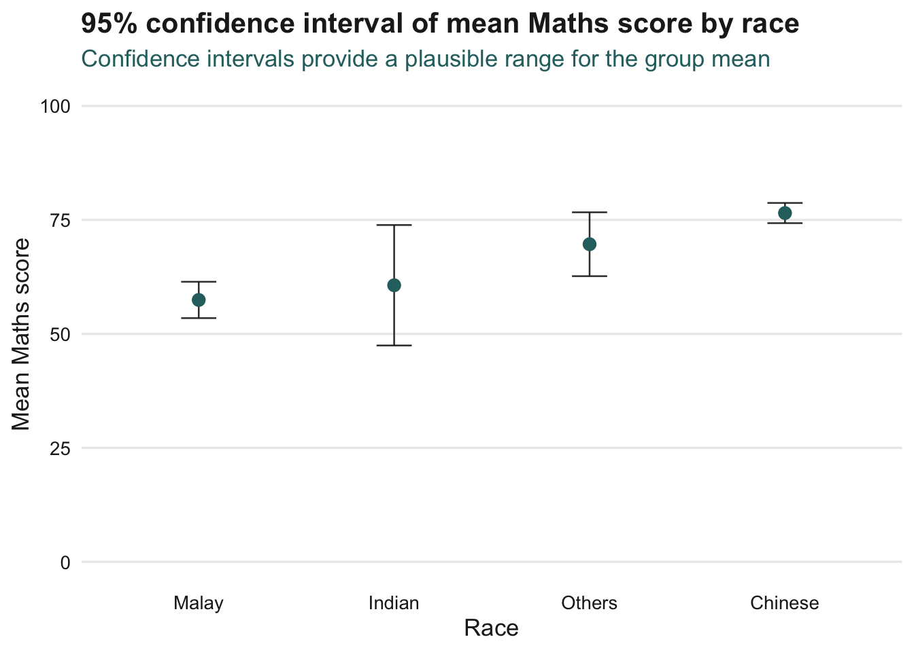
The confidence interval is wider than the standard error bar because it is designed to express a broader range of uncertainty around the estimated mean.
TipWhat can we learn?
When confidence intervals are wide, the estimate is less precise. This often happens when the group has a smaller sample size or higher variation.
4.3.4 Visualising uncertainty with interactive error bars
Static error bars are useful, but interaction allows the reader to inspect the exact values. In this section, the 99% confidence interval is shown with an interactive plot and a linked table.
shared_sum <- SharedData$new(
my_sum %>%
select(RACE, n, mean, sd, se, ci99_low, ci99_high)
)
p_int <- ggplot(shared_sum, aes(x = reorder(RACE, mean), y = mean)) +
geom_errorbar(
aes(
ymin = ci99_low,
ymax = ci99_high
),
width = 0.2,
colour = my_dark,
linewidth = 0.45
) +
geom_point(
aes(
text = paste0(
"Race: ", RACE,
"<br>N: ", n,
"<br>Mean Maths: ", round(mean, 2),
"<br>SD: ", round(sd, 2),
"<br>SE: ", round(se, 2),
"<br>99% CI: [", round(ci99_low, 2), ", ", round(ci99_high, 2), "]"
)
),
colour = my_teal,
size = 2.8
) +
coord_cartesian(ylim = c(0, 100)) +
labs(
title = "Interactive 99% confidence interval of mean Maths score by race",
x = "Race",
y = "Mean Maths score"
) +
theme_yy +
theme(axis.text.x = element_text(angle = 30, hjust = 1))
bscols(
widths = c(7, 5),
ggplotly(p_int, tooltip = "text"),
DT::datatable(
shared_sum,
rownames = FALSE,
class = "compact stripe hover",
options = list(pageLength = 10, scrollX = TRUE),
width = "100%"
) %>%
formatRound(columns = c("mean", "sd", "se", "ci99_low", "ci99_high"), digits = 2)
)The interactive version is useful because readers can hover over each point and check the detailed interval values directly.
4.3.5 Extra comparison: standard error, 95% CI, and 99% CI
This additional graph extends the original exercise slightly. It compares three levels of uncertainty in one chart: standard error, 95% confidence interval, and 99% confidence interval.
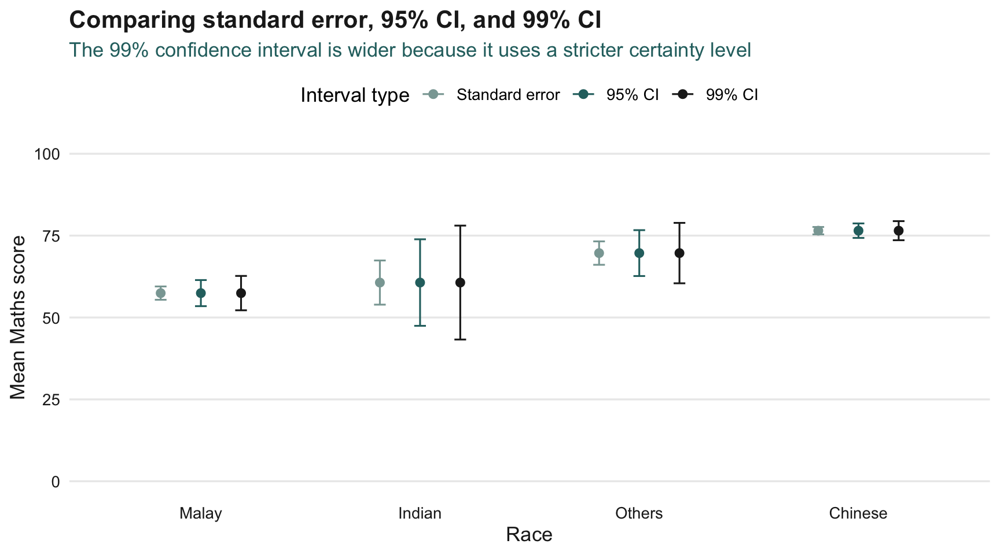
uncertainty_compare <- my_sum %>%
transmute(
RACE,
mean,
`Standard error` = se,
`95% CI` = 1.96 * se,
`99% CI` = 2.58 * se
) %>%
pivot_longer(
cols = c(`Standard error`, `95% CI`, `99% CI`),
names_to = "interval_type",
values_to = "half_width"
) %>%
mutate(
low = mean - half_width,
high = mean + half_width,
interval_type = factor(
interval_type,
levels = c("Standard error", "95% CI", "99% CI")
)
)
ggplot(
uncertainty_compare,
aes(x = reorder(RACE, mean), y = mean, colour = interval_type)
) +
geom_errorbar(
aes(ymin = low, ymax = high),
position = position_dodge(width = 0.55),
width = 0.16,
linewidth = 0.55
) +
geom_point(
position = position_dodge(width = 0.55),
size = 2.2
) +
scale_colour_manual(
values = c(
"Standard error" = my_soft_teal,
"95% CI" = my_teal,
"99% CI" = my_dark
)
) +
coord_cartesian(ylim = c(0, 100)) +
labs(
title = "Comparing standard error, 95% CI, and 99% CI",
subtitle = "The 99% confidence interval is wider because it uses a stricter certainty level",
x = "Race",
y = "Mean Maths score",
colour = "Interval type"
) +
theme_yy +
theme(legend.position = "top")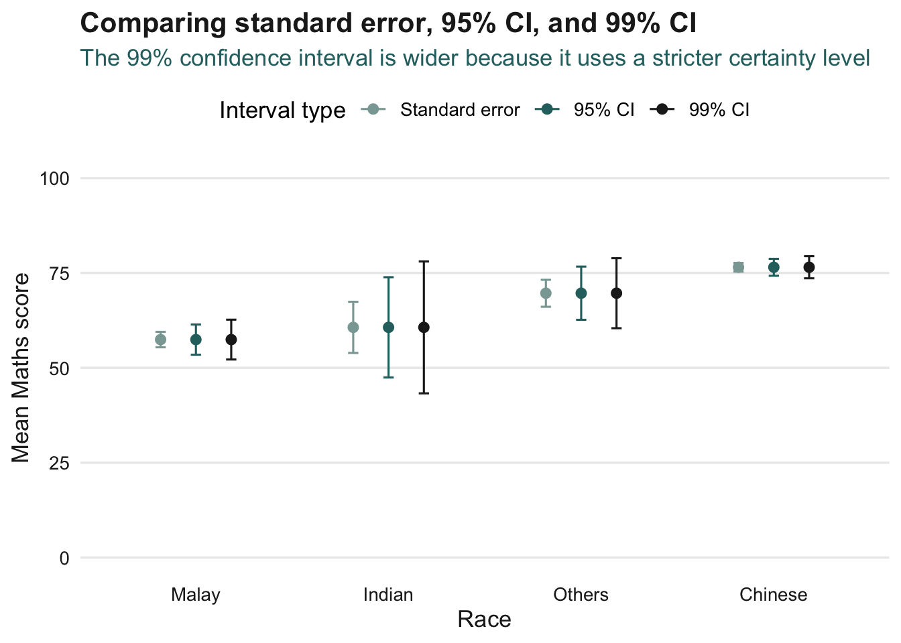
TipExtra interpretation
This chart shows that uncertainty is not a fixed object. The interval becomes wider when we ask for a higher level of confidence.
4.4 Visualising Uncertainty: ggdist package
ggdist provides geoms and statistics designed specifically for visualising uncertainty and distributions. It can show multiple interval levels in one plot, making it more expressive than a simple error bar.
4.4.1 Downloading conceptual images
The original chapter includes conceptual images for ggdist. The code below attempts to download images from the original reading into an img folder. If the download fails, the page will still render because the analytical graphs are recreated using R code.
Conceptual image download skipped or unavailable. The R-generated uncertainty charts below cover the same idea.dir.create("img", showWarnings = FALSE)
img_urls <- c(
"https://r4va.netlify.app/chap11/image1.png",
"https://r4va.netlify.app/chap11/image2.png",
"https://r4va.netlify.app/chap11/image3.png",
"https://r4va.netlify.app/chap11/image4.png"
)
for (i in seq_along(img_urls)) {
out_file <- file.path("img", paste0("chap11_concept_", i, ".png"))
if (!file.exists(out_file)) {
try(download.file(img_urls[i], out_file, mode = "wb", quiet = TRUE), silent = TRUE)
}
}
concept_img <- list.files("img", pattern = "chap11_concept_.*\\.png$", full.names = TRUE)
if (length(concept_img) > 0) {
knitr::include_graphics(concept_img[1])
}
NoteNote
The downloaded image is optional. The main marks should come from the R-generated uncertainty visualisations, not from copied images.
4.4.2 Visualising uncertainty with stat_pointinterval()
stat_pointinterval() shows a point estimate and one or more interval levels. In this example, we show the mean and multiple interval widths for Maths scores by race.
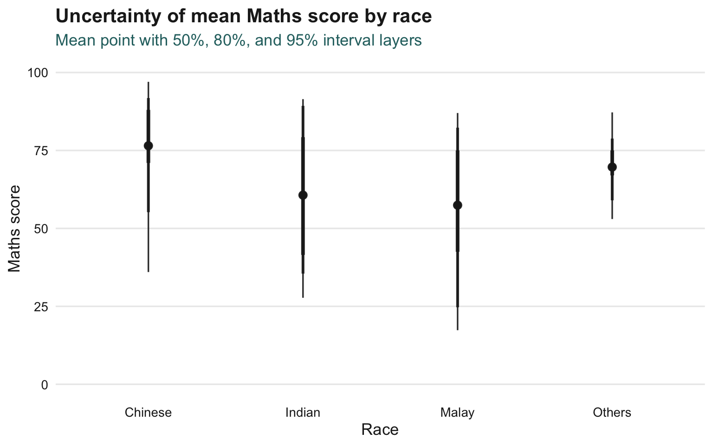
exam %>%
ggplot(aes(x = RACE, y = MATHS)) +
stat_pointinterval(
point_interval = mean_qi,
.width = c(0.50, 0.80, 0.95),
colour = my_dark,
fill = my_teal,
alpha = 0.9,
show.legend = FALSE
) +
coord_cartesian(ylim = c(0, 100)) +
labs(
title = "Uncertainty of mean Maths score by race",
subtitle = "Mean point with 50%, 80%, and 95% interval layers",
x = "Race",
y = "Maths score"
) +
theme_yy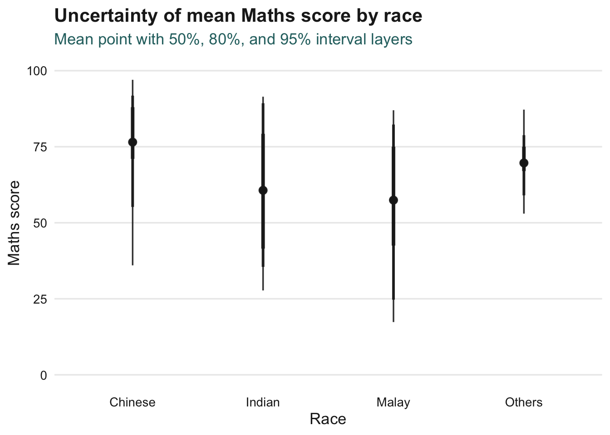
Unlike a simple error bar, this chart allows several uncertainty intervals to be shown together.
4.4.3 Median point and quantile interval
The mean is sensitive to extreme values. A median-based interval can be useful when we want a more robust summary.
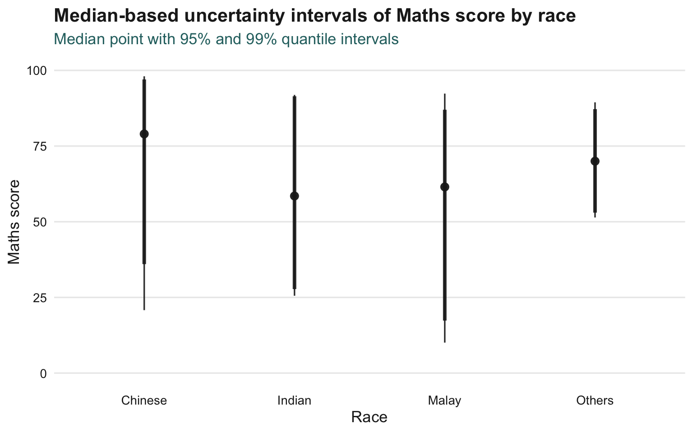
exam %>%
ggplot(aes(x = RACE, y = MATHS)) +
stat_pointinterval(
point_interval = median_qi,
.width = c(0.95, 0.99),
colour = my_dark,
fill = my_soft_teal,
alpha = 0.9,
show.legend = FALSE
) +
coord_cartesian(ylim = c(0, 100)) +
labs(
title = "Median-based uncertainty intervals of Maths score by race",
subtitle = "Median point with 95% and 99% quantile intervals",
x = "Race",
y = "Maths score"
) +
theme_yy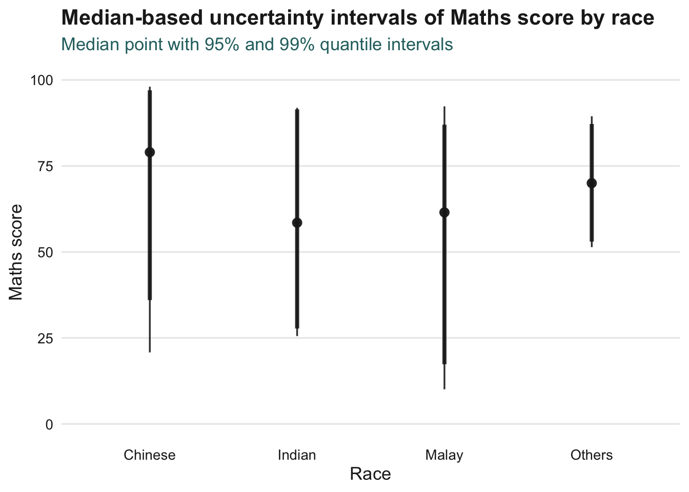
This version is less affected by very high or very low scores, making it a useful alternative to the mean-based plot.
4.4.4 Visualising uncertainty with stat_gradientinterval()
stat_gradientinterval() uses a shaded interval to represent uncertainty. This can feel more intuitive than a line interval because the density of the visual mark suggests where the central values are more likely to be.
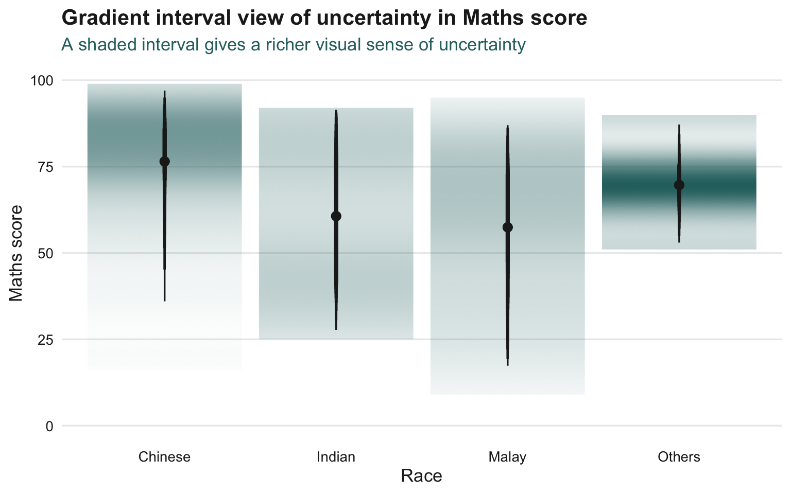
exam %>%
ggplot(aes(x = RACE, y = MATHS)) +
stat_gradientinterval(
point_interval = mean_qi,
.width = seq(0.4, 0.95, by = 0.05),
fill = my_teal,
colour = my_dark,
show.legend = FALSE
) +
coord_cartesian(ylim = c(0, 100)) +
labs(
title = "Gradient interval view of uncertainty in Maths score",
subtitle = "A shaded interval gives a richer visual sense of uncertainty",
x = "Race",
y = "Maths score"
) +
theme_yy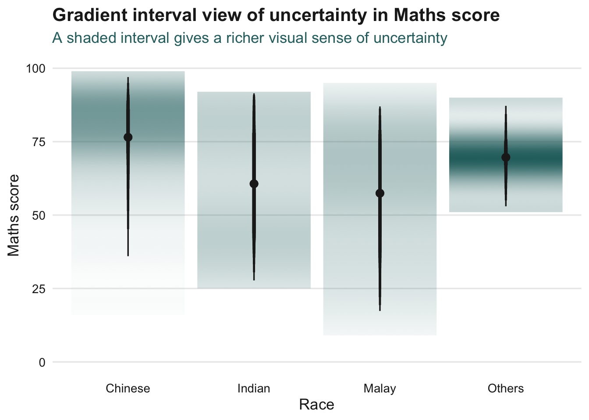
TipWhat can we learn?
The ggdist approach is more flexible than traditional error bars. It can show several levels of uncertainty in one figure while still keeping the chart compact.
4.5 Visualising Uncertainty with Hypothetical Outcome Plots
Hypothetical Outcome Plots, or HOPs, show uncertainty through repeated plausible outcomes. Instead of asking the reader to interpret a single static interval, HOPs show uncertainty as movement.
4.5.1 Installing ungeviz
The original workflow uses the ungeviz package. Since this package is installed from GitHub, it may not be available on every machine.
NoteInstallation note
Install ungeviz only once in the Console if you need it.
The page below is designed with a fallback so that the website can still render if ungeviz is unavailable.
Install once in Console if needed:
devtools::install_github("wilkelab/ungeviz")devtools::install_github("wilkelab/ungeviz")4.5.2 Loading ungeviz
ungeviz is not installed. The next section will use a static fallback view.library(ungeviz)4.5.3 Visualising uncertainty with HOPs
This section uses a safe fallback. If ungeviz is installed, the HOP code can be used. If it is not installed, the page still renders a static uncertainty plot showing raw points, group means, and confidence intervals.
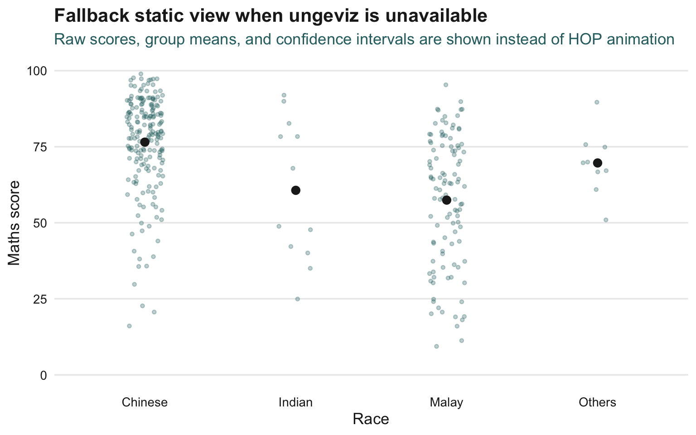
library(ungeviz)
hop_plot <- ggplot(
data = exam,
aes(x = factor(RACE), y = MATHS)
) +
geom_point(
position = position_jitter(height = 0.3, width = 0.05),
size = 0.6,
colour = my_teal,
alpha = 0.45
) +
geom_hpline(
data = sampler(25, group = RACE),
height = 0.6,
colour = my_dark
) +
labs(
title = "Hypothetical outcome plot for Maths score by race",
subtitle = "Repeated draws help readers feel the uncertainty instead of reading only one interval",
x = "Race",
y = "Maths score"
) +
theme_bw(base_size = 12) +
theme(
plot.title = element_text(face = "bold", colour = my_dark),
plot.subtitle = element_text(colour = my_teal),
axis.title = element_text(colour = my_dark),
axis.text = element_text(colour = my_dark)
) +
transition_states(.draw, 1, 3)
if (!dir.exists("img")) dir.create("img")
hop_anim <- animate(
hop_plot,
nframes = 40,
fps = 8,
width = 700,
height = 450,
renderer = gifski_renderer(loop = TRUE)
)
anim_save("img/hop_exam.gif", animation = hop_anim)
knitr::include_graphics("img/hop_exam.gif")
WarningRendering warning
Animations can be heavier than normal plots. If the animation chunk causes render issues on your Mac, keep the Code tab as evidence of the HOP method and use the fallback View for stable rendering.
4.6 Reference
This exercise covered three main approaches to visualising uncertainty:
- traditional error bars with
ggplot2, - richer uncertainty graphics with
ggdist, - animated uncertainty thinking through HOPs.
The main lesson is that uncertainty should be shown clearly, not hidden behind a single mean value. A good uncertainty chart helps readers understand both the estimate and how much confidence they should place in it.